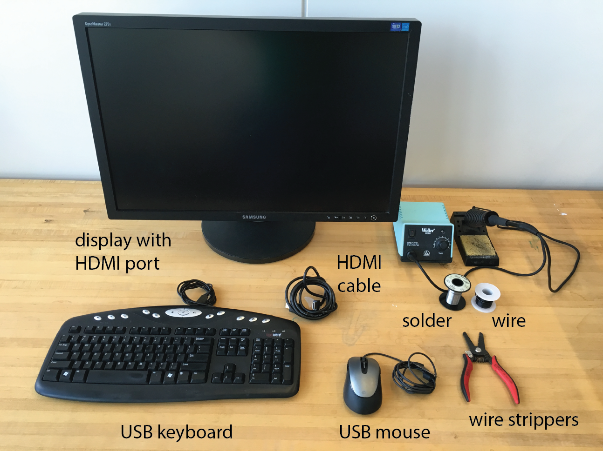

Overview
Pix is built on Raspberry Pi and prints photos you can physically organize and share. You'll need a printer for the full functionality!
If you are building a Pix completely from scratch, you will also need to use a laser cutter and a 3D printer. If you don't have access to either of these tools, don't worry – you can order the parts from Ponoko and Shapeways!
At a minimum, you'll need to use these tools:
Display with HDMI port, HDMI cable, USB keyboard, USB mouse, soldering iron, solder, wire, wire strippers.
Parts
Below is a list of hardware you'll need for your Pix, all of which can be purchased from Adafruit.
| Part | Price |
|---|---|
| Raspberry Pi 3 Model B | $39.95 |
| Micro SD Card with NOOBS preinstalled | $14.95 |
| Raspberry Pi Camera Board V2 | $29.95 |
| Button | $2.95 |
| MicroUSB Charger | $7.95 |
| Female headers | $0.95 |
| Total | $96.70 |
You will also want to have a regular through-hole LED. These cost pennies each. If you don't have one lying around, here's a link to a pack of 25 from Adafruit: https://www.adafruit.com/products/299
Have all the parts? Let's get started!
Fabricate Pix